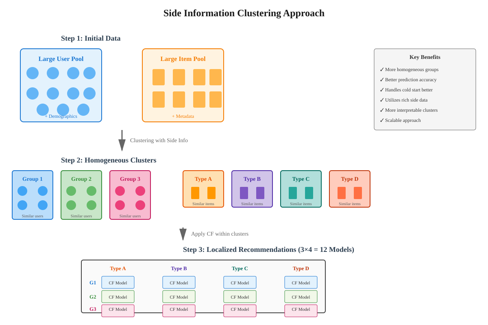
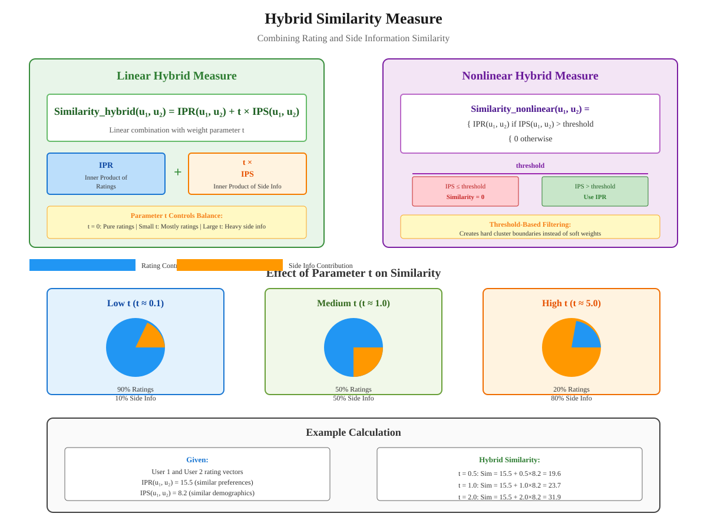

Refining Recommendation Models using Side Information
📋 Quick Navigation
- Introduction
- The Limitation of Rating Data Alone
- Side Information Concept
- Clustering with Side Information
- Vector Representation and Similarity
- Hybrid Similarity Measures
- Practical Implementation
- Model Comparison
- Code Implementation
- References & Further Reading
Introduction
Recommendation systems traditionally rely on user-item rating matrices to generate predictions. However, in the era of big data, systems have access to far more information about users and items than just historical ratings. This documentation explores how to leverage side information to refine recommendation models and improve prediction accuracy.
Key Learning Objectives:
- Understanding the role of side information in recommendation systems
- Learning how to cluster users and items using additional features
- Implementing hybrid similarity measures that combine ratings and side information
- Applying variable selection techniques to extract relevant features
- Building more sophisticated recommendation models through data refinement

What is Side Information?
Side information refers to any additional data about users or items beyond the rating matrix. This includes:
- User Features: Demographics, browsing history, purchase patterns, time spent on pages, spending habits
- Item Features: Price, category, specifications, weight, color, brand information
- Behavioral Data: Click-through rates, search queries, review reading time, cart abandonment patterns
The Limitation of Rating Data Alone
Traditional collaborative filtering approaches represent users and items solely through their rating patterns. For example, a user "Frank" is reduced to a partially filled row of movie ratings. While this captures preference information, it ignores the rich contextual data available.
Problems with Rating-Only Approaches:
- Cold Start Problem: New users or items have no ratings, making recommendations impossible
- Sparsity: Rating matrices are typically 99%+ sparse, limiting prediction accuracy
- Limited Context: Ratings don't capture why users made certain choices
- Temporal Dynamics: Static rating models miss evolving user preferences
- Missing Nuance: A single rating number cannot capture complex preferences
The Big Data Opportunity:
Modern platforms like Amazon, Netflix, and Spotify collect extensive data beyond ratings:
- Amazon knows: Products viewed, time spent on pages, purchase frequency, browsing patterns, external purchases (via credit cards), wish list items
- Netflix knows: Viewing completion rates, pause/rewind patterns, device types, viewing times, search queries
- Spotify knows: Skip rates, playlist creation, sharing behavior, listening contexts, genre exploration patterns
This additional data can significantly enhance recommendation quality when properly incorporated.
Side Information Concept
The fundamental principle for using side information is model refinement through homogeneous grouping. Instead of treating all users and items uniformly, we use side information to create more homogeneous clusters, then apply recommendation algorithms within each cluster.
Model Evolution:
- Level 1 - Naive Model: Assumes all user-item pairs have the same rating (completely homogeneous)
- Level 2 - Collaborative Filtering: Uses rating patterns to differentiate users and items
- Level 3 - Side Information Enhanced: Uses additional features to create refined user/item groups
The Clustering Approach:
The process involves three main steps:
- Step 1 - Feature Collection: Gather side information about users and items from multiple sources
- Step 2 - Clustering: Group users into homogeneous clusters (e.g., 3 user groups) and items into homogeneous clusters (e.g., 4 item groups)
- Step 3 - Localized Recommendation: Apply user-item collaborative filtering within each group pair (3 × 4 = 12 separate models)
Example: Frank's Amazon Profile:
Amazon might know Frank:
- Product Interests: Has viewed dance equipment (24 minutes browsing), gardening tools, movies; hasn't viewed cooking books
- Purchase Behavior: Last purchase $152, weekend spending patterns, compulsive buying indicators
- Financial Profile: Income level estimates, credit card usage (Amazon card), external purchases
- Demographics: Location, age group, family status (inferred from purchases)
With this information, Amazon can identify users similar to Frank and provide more targeted recommendations.
Relevance of Side Information:
Not all data is equally valuable. Good side information should:
- Discriminate Preferences: Help distinguish between users/items with different preference patterns
- Be Predictive: Correlate with rating behavior or purchase decisions
- Be Available: Accessible for both existing and new users/items
- Be Scalable: Computable efficiently for millions of users and items
Clustering with Side Information
Clustering is the process of grouping similar objects together. When using side information for recommendation systems, we cluster both users and items based on their feature vectors.
Vector Representation:
Every user and item is represented as a vector (ordered list of numbers). For Frank, his vector might look like:
F = [1, 0, 1, 24, 152, ...]
Interpreting the Vector:
F[1] = 1→ Has looked at gardening equipmentF[2] = 0→ Has not looked at cooking booksF[3] = 1→ Has looked at moviesF[4] = 24→ Spent 24 minutes browsing dance equipmentF[5] = 152→ Spent $152 on last purchase...→ Hundreds or thousands more features
Similarity Measurement:
Similarity between two users is typically computed using inner products:
similarity(user_i, user_j) = v_i · v_j = Σ(v_i[k] × v_j[k])
Where v_i and v_j are the feature vectors for users i and j.
Clustering Techniques:
Several methods can cluster users/items effectively:
- Spectral Clustering: Finds optimal projection of data before clustering; useful for non-linear cluster boundaries
- Sparse Methods: Keeps only the most relevant features; reduces dimensionality and computational cost
- Locality-Sensitive Hashing (LSH): Approximate nearest neighbors; enables fast clustering for large datasets
- K-Means: Traditional centroid-based clustering; simple and scalable
- Hierarchical Clustering: Creates tree structure of clusters; useful for understanding relationships
Variable Selection:
With hundreds of thousands of potential features, selecting relevant ones is crucial:
Question: Is Frank's flight to Vegas purchase relevant for movie recommendations?
Rather than debating this philosophically, let the data decide through:
- Feature Importance Scoring: Measure correlation with rating patterns
- Dimension Reduction: PCA, autoencoders, or matrix factorization
- Regularization: Lasso (L1) or elastic net penalties to zero out irrelevant features
- Cross-Validation: Test which features improve out-of-sample prediction accuracy
Practical Considerations:
- Cluster Count Selection: Use elbow method, silhouette scores, or cross-validation to determine optimal number of clusters
- Dynamic Clustering: Re-cluster periodically as user preferences and item catalogs evolve
- Computational Efficiency: Use approximate methods (LSH, mini-batch k-means) for large-scale systems
- Interpretability: Balance prediction accuracy with understanding why clusters form
Vector Representation and Similarity
The foundation of using side information lies in representing users and items as vectors and measuring their similarity.
Creating Feature Vectors:
For Users:
- Demographic Features: Age, gender, location, income bracket (if available)
- Behavioral Features: Click counts, time spent, purchase frequency, return rates
- Content Features: Genres viewed, product categories browsed, price ranges explored
- Temporal Features: Time of day preferences, seasonal patterns, tenure on platform
- Social Features: Friend connections, influencer status, review activity
For Items:
- Descriptive Features: Category, brand, price, specifications, materials
- Content Features: Genre, keywords, actors/authors, production year
- Popularity Features: View counts, average rating, review counts, sales rank
- Metadata Features: Length/duration, file size, release date, awards won
Normalization and Scaling:
Before computing similarity, features should be normalized:
Standardization: x' = (x - μ) / σ
Min-Max Scaling: x' = (x - min) / (max - min)
L2 Normalization: v' = v / ||v||
This ensures features on different scales contribute fairly to similarity measures.
Inner Product Similarity:
The inner product between two vectors measures their similarity:
IP(u, v) = Σ(u[i] × v[i]) = u · v
Properties:
- Higher values indicate greater similarity
- Negative values indicate dissimilarity (if data contains negative values)
- Equals zero for orthogonal (independent) vectors
- Maximized when vectors point in same direction
Alternative Similarity Measures:
- Cosine Similarity:
cos(u, v) = (u · v) / (||u|| × ||v||)- Normalized inner product; ranges from -1 to 1 - Euclidean Distance:
d(u, v) = ||u - v||- Direct geometric distance; smaller values indicate more similarity - Jaccard Similarity:
J(A, B) = |A ∩ B| / |A ∪ B|- For binary features; measures set overlap - Pearson Correlation: Measures linear relationship; ranges from -1 to 1
Hybrid Similarity Measures
A key innovation is combining rating-based similarity with side information-based similarity into a hybrid similarity measure.

Two Sources of Similarity:
- IPR (Inner Product of Ratings): Similarity computed from user-item rating matrix (traditional collaborative filtering)
- IPS (Inner Product of Side information): Similarity computed from user/item feature vectors
Linear Hybrid Measure:
The simplest combination is a weighted sum:
Similarity_hybrid(u₁, u₂) = IPR(u₁, u₂) + t × IPS(u₁, u₂)
Where:
IPR(u₁, u₂)= Inner product between rating vectors of users u₁ and u₂IPS(u₁, u₂)= Inner product between side information vectors of users u₁ and u₂t= Weight parameter controlling importance of side information (t ≥ 0)
Interpreting the Parameter t:
- t = 0: Uses only rating information (traditional collaborative filtering)
- Small t (0 < t < 1): Primarily uses ratings with minor side information adjustment
- Large t (t > 1): Heavily weights side information; useful when ratings are sparse
- t → ∞: Uses only side information (content-based filtering)
Choosing t:
The optimal value of t depends on:
- Data Quality: How predictive is your side information?
- Sparsity: Sparser rating matrices benefit from higher t
- Cold Start: New users/items with no ratings require high t
- Cross-Validation: Test different t values on held-out data
- Per-User Adaptation: Different users might benefit from different t values
Alternative Interpretation:
The hybrid measure can be viewed as concatenating rating and side information vectors:
v_augmented = [ratings, √t × side_info]
Then computing standard inner product:
IP(v₁_aug, v₂_aug) = IPR + t × IPS
This shows the hybrid measure naturally arises from treating ratings and side information as different feature types with different weights.
Nonlinear Hybrid Measures:
Instead of linear combination, use conditional logic:
Similarity_nonlinear(u₁, u₂) = {
IPR(u₁, u₂) if IPS(u₁, u₂) > threshold
0 otherwise
}
This implements:
- First Filter: Use side information to determine if users are similar enough to compare
- Then Recommend: Only use rating similarity among users passing the filter
- Threshold Selection: Chosen through cross-validation like parameter t
Benefits:
- Creates hard clusters rather than soft weighting
- More interpretable: users are "in cluster" or "out of cluster"
- Computationally efficient: can pre-compute clusters
Advanced Hybrid Approaches:
- Neural Networks: Learn nonlinear combinations automatically
- Ensemble Methods: Combine multiple similarity measures with learned weights
- Context-Aware: Use different hybrid functions for different contexts (time, device, etc.)
- Attention Mechanisms: Dynamically weight different features based on current recommendation task
Practical Implementation
Implementation Pipeline:
Phase 1: Data Collection and Preprocessing
- Collect Side Information: Gather user/item features from multiple sources (databases, logs, external APIs)
- Handle Missing Values: Impute missing features using mean/median/mode or more sophisticated methods
- Feature Engineering: Create derived features (ratios, interactions, temporal aggregations)
- Normalization: Standardize or scale features to comparable ranges
- Train-Test Split: Reserve held-out data for parameter tuning and evaluation
Phase 2: Variable Selection
- Correlation Analysis: Remove highly correlated redundant features
- Feature Importance: Use tree-based models to rank feature importance
- Dimensionality Reduction: Apply PCA or autoencoders if feature space is very large
- Regularization: Use Lasso or elastic net to automatically select relevant features
- Domain Expertise: Incorporate business knowledge about relevant features
Phase 3: Clustering (Optional)
- Choose Clustering Algorithm: K-means for speed, spectral for complex boundaries, hierarchical for interpretability
- Select Number of Clusters: Use elbow method, silhouette scores, or business constraints
- Cluster Users and Items: Apply chosen algorithm separately to user and item feature matrices
- Validate Clusters: Check if clusters correspond to meaningful user/item groups
- Assign New Users/Items: Develop procedure for assigning new entities to clusters
Phase 4: Similarity Computation
- Compute IPR: Calculate rating-based similarity for all user/item pairs
- Compute IPS: Calculate side information-based similarity for all user/item pairs
- Choose Hybrid Function: Linear combination or nonlinear threshold-based
- Tune Parameters: Use cross-validation to select optimal t or threshold values
- Store Similarity Matrix: Pre-compute and cache for fast recommendations
Phase 5: Recommendation Generation
- Find Similar Users/Items: Query similarity matrix for nearest neighbors
- Weight by Similarity: Use hybrid similarity scores as weights in prediction formula
- Generate Predictions: Apply weighted average or more sophisticated aggregation
- Rank and Filter: Order recommendations by predicted rating, apply business rules
- Serve to Users: Return top-N recommendations through API or UI
Performance Optimization:
- Approximate Nearest Neighbors: Use LSH or ANNOY for fast similarity search at scale
- Caching: Store frequently accessed similarity scores and recommendations
- Batch Processing: Update similarity matrices and clusters offline periodically
- Distributed Computing: Use Spark or Dask for parallel computation on large datasets
- Online Learning: Update user features and similarities in real-time as new data arrives
Monitoring and Maintenance:
- Track Metrics: Monitor RMSE, MAE, precision@k, recall@k, diversity, novelty
- A/B Testing: Compare side information-enhanced model against baseline
- Feature Drift: Detect when feature distributions change significantly
- Re-clustering: Periodically re-cluster as user base and item catalog evolve
- Parameter Re-tuning: Adjust t or threshold as data characteristics change
Model Comparison
Comparison of Recommendation Approaches:
| Approach | Data Required | Cold Start Performance | Scalability | Interpretability | Accuracy |
|---|---|---|---|---|---|
| Content-Based | Item features only | Excellent (no ratings needed) | High | High (feature-driven) | Moderate |
| Collaborative Filtering | Ratings matrix only | Poor (needs ratings) | Moderate | Low (latent factors) | High |
| Clustering + CF | Ratings + side info | Good (side info helps) | Moderate | Moderate (cluster meanings) | High |
| Linear Hybrid | Ratings + side info | Very Good (weighted balance) | Moderate | Moderate (weight interpretation) | Very High |
| Nonlinear Hybrid | Ratings + side info | Very Good (flexible rules) | High (pre-clustering) | High (clear cluster boundaries) | Very High |
| Deep Learning | Ratings + side info + context | Excellent (handles all inputs) | Low (computationally intensive) | Very Low (black box) | Highest |
When to Use Each Approach:
- Content-Based: New platform with few ratings; items have rich feature descriptions; transparency important
- Collaborative Filtering: Mature platform with dense rating matrix; computational resources limited; pure preference-based recommendations desired
- Clustering + CF: Distinct user/item segments exist; interpretable groups needed for business strategy; moderate rating sparsity
- Linear Hybrid: General-purpose enhancement of CF; good side information available; parameter tuning capability exists
- Nonlinear Hybrid: Clear user/item taxonomies exist; hard cluster boundaries appropriate; computational efficiency important
- Deep Learning: Very large datasets; complex feature interactions; predictive accuracy paramount; computational resources abundant
Performance Trade-offs:
- Accuracy vs Interpretability: More complex models (deep learning) achieve higher accuracy but are harder to explain
- Computational Cost vs Quality: Sophisticated methods require more processing but yield better recommendations
- Flexibility vs Simplicity: Hybrid methods handle diverse scenarios but require careful parameter tuning
- Cold Start vs Mature Users: Balance new user experience (leverage side info) with mature user experience (trust ratings)
Code Implementation
🔗 Google Colab Implementation

Complete implementation of side information-enhanced recommendation system with clustering and hybrid similarity measures.
📊 Python Implementation Example
import numpy as np
from sklearn.preprocessing import StandardScaler
from sklearn.cluster import KMeans
from sklearn.metrics.pairwise import cosine_similarity
class SideInformationRecommender:
"""
Recommendation system using side information with hybrid similarity.
"""
def __init__(self, n_user_clusters=3, n_item_clusters=4, t=1.0):
"""
Initialize recommender.
Parameters:
-----------
n_user_clusters : int
Number of user clusters
n_item_clusters : int
Number of item clusters
t : float
Weight for side information in hybrid similarity (t >= 0)
"""
self.n_user_clusters = n_user_clusters
self.n_item_clusters = n_item_clusters
self.t = t
self.user_clusterer = KMeans(n_clusters=n_user_clusters, random_state=42)
self.item_clusterer = KMeans(n_clusters=n_item_clusters, random_state=42)
self.user_scaler = StandardScaler()
self.item_scaler = StandardScaler()
self.user_clusters = None
self.item_clusters = None
self.user_features_scaled = None
self.item_features_scaled = None
def fit(self, ratings, user_features, item_features):
"""
Fit the model by clustering users and items.
Parameters:
-----------
ratings : np.ndarray, shape (n_users, n_items)
User-item rating matrix
user_features : np.ndarray, shape (n_users, n_user_features)
Side information for users
item_features : np.ndarray, shape (n_items, n_item_features)
Side information for items
"""
# Scale features
self.user_features_scaled = self.user_scaler.fit_transform(user_features)
self.item_features_scaled = self.item_scaler.fit_transform(item_features)
# Cluster users and items
self.user_clusters = self.user_clusterer.fit_predict(self.user_features_scaled)
self.item_clusters = self.item_clusterer.fit_predict(self.item_features_scaled)
# Store ratings
self.ratings = ratings
return self
def compute_hybrid_similarity(self, ratings_subset, features_subset):
"""
Compute hybrid similarity combining ratings and side information.
Parameters:
-----------
ratings_subset : np.ndarray
Subset of rating matrix
features_subset : np.ndarray
Subset of feature matrix
Returns:
--------
similarity : np.ndarray
Hybrid similarity matrix
"""
# Compute rating-based similarity (IPR)
ipr = np.dot(ratings_subset, ratings_subset.T)
# Compute side information-based similarity (IPS)
ips = np.dot(features_subset, features_subset.T)
# Combine with weight t
hybrid_similarity = ipr + self.t * ips
return hybrid_similarity
def predict(self, user_idx, item_idx, k=10):
"""
Predict rating for user-item pair using hybrid similarity.
Parameters:
-----------
user_idx : int
User index
item_idx : int
Item index
k : int
Number of nearest neighbors to consider
Returns:
--------
prediction : float
Predicted rating
"""
# Find user's cluster
user_cluster = self.user_clusters[user_idx]
item_cluster = self.item_clusters[item_idx]
# Get users in same cluster
cluster_users = np.where(self.user_clusters == user_cluster)[0]
# Get items in same cluster
cluster_items = np.where(self.item_clusters == item_cluster)[0]
# Extract cluster subsets
ratings_subset = self.ratings[np.ix_(cluster_users, cluster_items)]
features_subset = self.user_features_scaled[cluster_users]
# Compute hybrid similarity
similarity = self.compute_hybrid_similarity(ratings_subset, features_subset)
# Find user's position in cluster
user_pos = np.where(cluster_users == user_idx)[0][0]
item_pos = np.where(cluster_items == item_idx)[0][0]
# Get k most similar users (excluding self)
user_similarities = similarity[user_pos].copy()
user_similarities[user_pos] = -np.inf # Exclude self
top_k_indices = np.argsort(user_similarities)[-k:]
top_k_similarities = user_similarities[top_k_indices]
# Weighted average of similar users' ratings
similar_ratings = ratings_subset[top_k_indices, item_pos]
# Handle missing ratings
valid_mask = similar_ratings > 0
if not np.any(valid_mask):
return np.mean(self.ratings[self.ratings > 0])
weights = top_k_similarities[valid_mask]
ratings_valid = similar_ratings[valid_mask]
prediction = np.average(ratings_valid, weights=weights)
return prediction
def recommend(self, user_idx, n_recommendations=10):
"""
Generate top-N recommendations for a user.
Parameters:
-----------
user_idx : int
User index
n_recommendations : int
Number of recommendations to return
Returns:
--------
recommendations : list of (item_idx, predicted_rating) tuples
"""
n_items = self.ratings.shape[1]
# Get items user hasn't rated
unrated_items = np.where(self.ratings[user_idx] == 0)[0]
# Predict ratings for unrated items
predictions = []
for item_idx in unrated_items:
pred_rating = self.predict(user_idx, item_idx)
predictions.append((item_idx, pred_rating))
# Sort by predicted rating and return top-N
predictions.sort(key=lambda x: x[1], reverse=True)
return predictions[:n_recommendations]
# Example usage
if __name__ == "__main__":
# Generate synthetic data
n_users, n_items = 100, 50
n_user_features, n_item_features = 10, 8
# Ratings matrix (sparse)
ratings = np.random.randint(0, 6, size=(n_users, n_items))
ratings[np.random.random((n_users, n_items)) > 0.2] = 0 # 80% sparsity
# Side information
user_features = np.random.randn(n_users, n_user_features)
item_features = np.random.randn(n_items, n_item_features)
# Train model
recommender = SideInformationRecommender(
n_user_clusters=3,
n_item_clusters=4,
t=1.5
)
recommender.fit(ratings, user_features, item_features)
# Get recommendations for user 0
recommendations = recommender.recommend(user_idx=0, n_recommendations=5)
print("Top 5 Recommendations:")
for item_idx, predicted_rating in recommendations:
print(f" Item {item_idx}: Predicted Rating = {predicted_rating:.2f}")
📈 Advanced Implementation: Nonlinear Hybrid
class NonlinearHybridRecommender(SideInformationRecommender):
"""
Recommendation system using nonlinear hybrid similarity with threshold.
"""
def __init__(self, n_user_clusters=3, n_item_clusters=4, threshold=0.5):
"""
Initialize recommender with threshold-based similarity.
Parameters:
-----------
threshold : float
Threshold for side information similarity to use rating similarity
"""
super().__init__(n_user_clusters, n_item_clusters, t=0)
self.threshold = threshold
def compute_hybrid_similarity(self, ratings_subset, features_subset):
"""
Compute nonlinear hybrid similarity using threshold rule.
"""
# Compute side information similarity
ips = cosine_similarity(features_subset)
# Compute rating similarity
ipr = np.dot(ratings_subset, ratings_subset.T)
# Apply threshold rule: use IPR only if IPS > threshold
hybrid_similarity = np.where(ips > self.threshold, ipr, 0)
return hybrid_similarity
🔧 Utility Functions
def select_relevant_features(X, y, k=10):
"""
Select k most relevant features using correlation with target.
Parameters:
-----------
X : np.ndarray
Feature matrix
y : np.ndarray
Target variable
k : int
Number of features to select
Returns:
--------
selected_indices : np.ndarray
Indices of selected features
"""
from scipy.stats import pearsonr
correlations = []
for i in range(X.shape[1]):
corr, _ = pearsonr(X[:, i], y)
correlations.append(abs(corr))
selected_indices = np.argsort(correlations)[-k:]
return selected_indices
def tune_hybrid_parameter(ratings, user_features, item_features,
t_values, cv_folds=5):
"""
Tune hybrid parameter t using cross-validation.
Parameters:
-----------
ratings : np.ndarray
Rating matrix
user_features : np.ndarray
User side information
item_features : np.ndarray
Item side information
t_values : list
Values of t to test
cv_folds : int
Number of cross-validation folds
Returns:
--------
best_t : float
Optimal value of t
"""
from sklearn.model_selection import KFold
best_rmse = float('inf')
best_t = t_values[0]
for t in t_values:
fold_rmses = []
kf = KFold(n_splits=cv_folds, shuffle=True, random_state=42)
for train_idx, test_idx in kf.split(ratings):
# Split data
train_ratings = ratings.copy()
test_ratings = ratings[test_idx]
train_ratings[test_idx] = 0
# Train model
model = SideInformationRecommender(t=t)
model.fit(train_ratings, user_features, item_features)
# Evaluate
predictions = []
actuals = []
for idx in test_idx:
for item_idx in range(ratings.shape[1]):
if ratings[idx, item_idx] > 0:
pred = model.predict(idx, item_idx)
predictions.append(pred)
actuals.append(ratings[idx, item_idx])
rmse = np.sqrt(np.mean((np.array(predictions) - np.array(actuals))**2))
fold_rmses.append(rmse)
avg_rmse = np.mean(fold_rmses)
if avg_rmse < best_rmse:
best_rmse = avg_rmse
best_t = t
return best_t
References & Further Reading
📚 Foundational Papers
-
Koren, Y., Bell, R., & Volinsky, C. (2009). "Matrix Factorization Techniques for Recommender Systems." IEEE Computer, 42(8), 30-37. Link
-
Ricci, F., Rokach, L., & Shapira, B. (2015). "Recommender Systems Handbook." Springer. Comprehensive guide covering collaborative filtering, content-based, and hybrid approaches.
-
Adomavicius, G., & Tuzhilin, A. (2005). "Toward the Next Generation of Recommender Systems: A Survey of the State-of-the-Art and Possible Extensions." IEEE Transactions on Knowledge and Data Engineering, 17(6), 734-749. Link
-
Sarwar, B., Karypis, G., Konstan, J., & Riedl, J. (2001). "Item-Based Collaborative Filtering Recommendation Algorithms." WWW '01: Proceedings of the 10th International Conference on World Wide Web, 285-295. Link
🔬 Advanced Techniques
-
He, X., Liao, L., Zhang, H., Nie, L., Hu, X., & Chua, T. S. (2017). "Neural Collaborative Filtering." WWW '17: Proceedings of the 26th International Conference on World Wide Web, 173-182. Deep learning approach to collaborative filtering. ArXiv
-
Shi, C., Hu, B., Zhao, W. X., & Yu, P. S. (2019). "Heterogeneous Information Network Embedding for Recommendation." IEEE Transactions on Knowledge and Data Engineering, 31(2), 357-370. Advanced side information integration. Link
-
Zhang, S., Yao, L., Sun, A., & Tay, Y. (2019). "Deep Learning Based Recommender System: A Survey and New Perspectives." ACM Computing Surveys, 52(1), 1-38. Comprehensive survey of deep learning methods. ArXiv
🛠️ Implementation Resources
-
Surprise: A Python Scikit for Recommender Systems - Documentation - Comprehensive library for building and analyzing recommender systems with built-in algorithms and evaluation metrics.
-
LightFM: Hybrid Recommendation Algorithm - GitHub - Python implementation combining collaborative and content-based filtering with side information support.
-
TensorFlow Recommenders - Documentation - Modern deep learning framework for building scalable recommendation systems with Google's TensorFlow.
📊 Datasets for Practice
-
MovieLens Dataset - Link - Standard benchmark with ratings and side information (genres, tags, timestamps).
-
Amazon Product Data - Link - Large-scale product reviews with extensive metadata and side information.
-
Last.fm Dataset - Link - Music listening data with user demographics and artist information.
Summary
This documentation explored how to enhance recommendation systems by incorporating side information beyond traditional rating matrices. Key takeaways include:
Core Concepts:
- Side information provides rich contextual data about users and items that significantly improves recommendation quality
- Clustering users and items based on side information creates more homogeneous groups for localized recommendations
- Hybrid similarity measures combine rating patterns with side information for robust predictions
Practical Implementation:
- Vector representation enables quantitative comparison of users and items using side information
- Linear hybrid measures provide a simple, effective way to weight rating and side information contributions
- Nonlinear hybrid measures use threshold-based rules to create hard cluster boundaries
- Variable selection techniques identify the most relevant features from potentially thousands of candidates
Best Practices:
- Collect diverse side information but use data-driven methods to select relevant features
- Tune hybrid parameters (t or threshold) using cross-validation on held-out data
- Balance model complexity with interpretability based on business requirements
- Monitor performance and re-cluster periodically as user base evolves
When to Use:
- Sparse rating matrices where collaborative filtering struggles
- Cold start scenarios with new users or items having no rating history
- Applications requiring interpretable recommendations tied to user/item characteristics
- Platforms with rich behavioral and contextual data beyond ratings
By thoughtfully incorporating side information, recommendation systems can achieve higher accuracy, better handle cold start problems, and provide more personalized experiences to users.
📝 Documentation Status: ✅ Complete and Ready for MkDocs Deployment
🎯 Target Audience: AI/ML Engineers, Data Scientists, Recommendation System Researchers
⚡ Prerequisites: Understanding of collaborative filtering, basic linear algebra, Python programming
🔄 Last Updated: October 2025